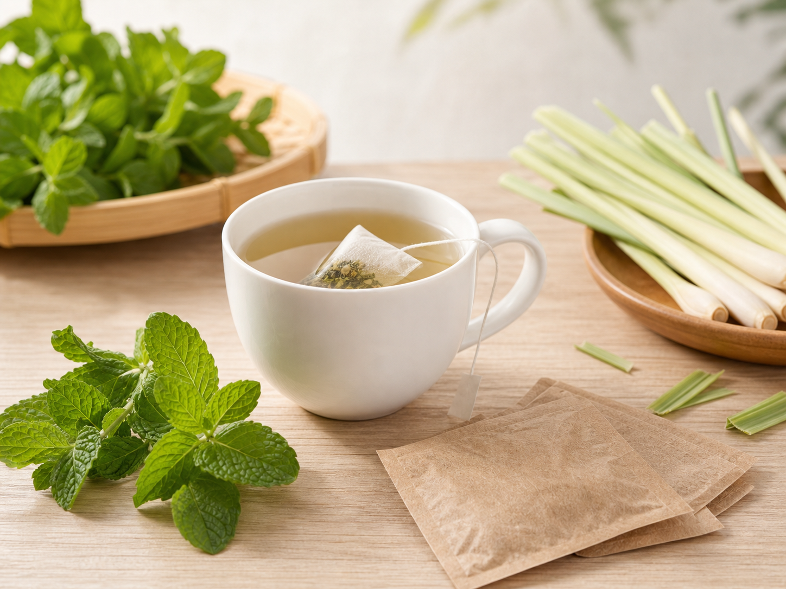
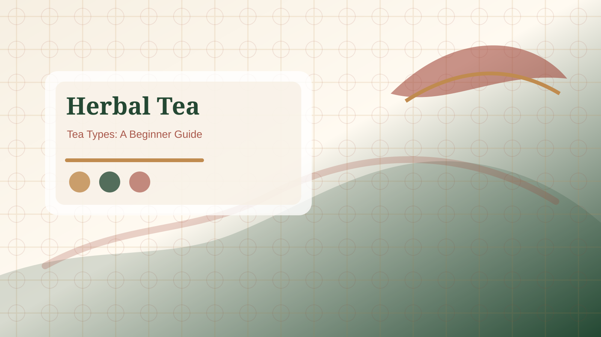

Caffeine wording
Compare naturally caffeine-free herbal infusions with decaffeinated tea products, because the words describe different things.

Recognize common herbal tea bag label words across English, Spanish, French, German, Japanese, and Chinese shopping contexts.
Quick Answer: Herbal tea terms by language help you recognize whether a product is an herbal infusion, a caffeinated tea, a caffeine-free blend, a gift set, or a flavored sachet. Translation helps with comparison, but the final decision should still come from the ingredient list, caffeine note, serving instructions, allergen statement, and seller details.

Many labels use words such as infusion, tisane, herbal blend, sachet, caffeine free, naturally caffeine free, decaffeinated, sampler, assorted, floral, mint, ginger, citrus, and spice. In Spanish, French, and German shopping contexts, words similar to infusion or tisane often describe the prepared drink. In Japanese or Chinese contexts, the label may focus more on tea-bag format, serving count, flavor, origin, or gift packaging. The useful habit is to identify the product type first, then read the ingredient list instead of assuming that one translated term tells the whole story.
Start with five checks: product type, caffeine wording, main ingredients, preparation directions, and serving count. A floral herbal tea bag and a green tea bag may sit on the same shelf, but they are not the same caffeine choice. A gift box may look premium because the packaging language sounds refined, but the ingredient order and freshness information still matter. Translation is a bridge into the label, not a substitute for reading the label.
Traditional herb names can sound medicinal, especially when translated into English. This page does not treat language as a health claim. If a product mentions wellness, relaxation, digestion, detox, sleep, or immunity, read that language carefully and check the seller's legal wording. For allergies, pregnancy, medication interactions, chronic conditions, or symptoms, use qualified professional advice rather than a tea label.
When you see a language you do not know, write down the product category, the caffeine phrase, the first three ingredients, the serving count, and the preparation line. Then compare those five items with a page in your own language. This habit prevents a common mistake: trusting a familiar flavor word while missing a caffeine note, allergen warning, or preparation requirement elsewhere on the package. If the tea is for a gift, also check whether the translated words describe the tea itself or only the box, sampler, or presentation style.
Reference: NCCIH herbs and supplement safety overview.
Compare naturally caffeine-free herbal infusions with decaffeinated tea products, because the words describe different things.
Words for box, sampler, assortment, and sachet usually describe presentation, not whether the blend fits the recipient.
A flavor name may mention ginger or rose, but the ingredient order shows whether that note is central or minor.
In many shopping contexts, tisane means an herbal infusion rather than tea from the tea plant. Still check the full label because usage can vary by market.
No. Look for the exact caffeine statement and ingredient list. Some products are naturally caffeine free, while others are decaffeinated teas.
No. A translated herb name helps identification, but safety depends on ingredients, allergies, medications, personal health, and qualified advice when needed.
Compare the product with a buying guide, caffeine-label FAQ, or scenario page before choosing a tea bag for daily use or a gift.